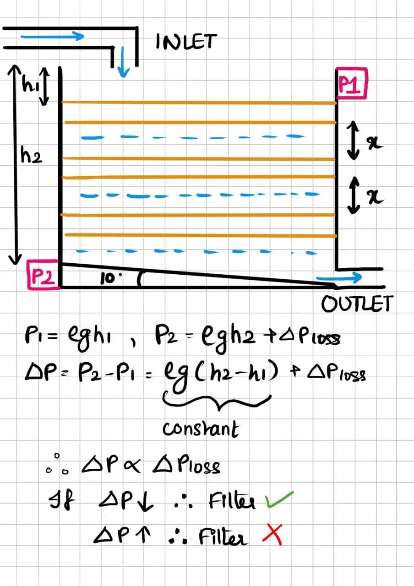
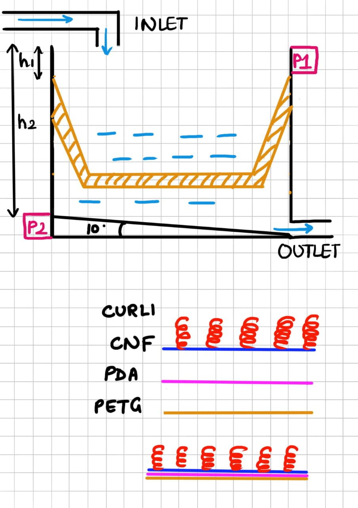

Introduction
To address this challenge of OCPS, we aim to develop a localized filtration system designed to selectively capture and retain OCPs from pre-treated water.
System Architecture
The hardware pruposed is a all 3D-printed, field-deployable filtration unit suitable for decentralized water remediation applications. Let’s talk about the main structure. The whole filter body is made from PETG, or Polyethylene Terephthalate Glycol . PETG’s a solid choice as it holds up after lots of use, doesn’t react with water, and doesn’t soak up oily stuff the way some plastics do. Plus, it’s easy to print with, so making replacement parts or new filters is pretty simple.
The system architecture includes:
Inlet
The inlet is placed vertically, which directs the incoming pre-treated water into the filtration module with minimal turbulence of an ideal flow of 0.1 to 0.5L/min and ensures uniform distribution of flow across the active filter surface.
Half‑Trapezium Shaped Filter Mesh (Active Zone)
The geometry plays a critical role in the filter’s performance by governing internal flow behavior. As organochlorine pesticides (OCPs) are hydrophobic in nature, they tend to adhere to flat walls, which means a flat horizontal filter mesh or the adsorption material on the side walls will not be efficient enough to remove the OCPs in water. To counter this problem, we have used a half-trapezium geometry that disrupts boundary-layer formation and redirects flow toward the mesh surface, ensuring repeated contact with the active zone while minimizing unwanted wall adsorption.
Mesh Composition
PETG–PDA–CNF Filter Design
In this filter, we only functionalize the active mesh area-the side walls stay plain PETG. That way, fibers don’t overlap with the walls and mess up the structure.To make the surface treatment last, we coat the PETG mesh with polydopamine (PDA). It’s a simple process: just soak the mesh in a slightly basic dopamine solution. The PDA forms a thin, even layer that sticks well, holds onto later coatings, and doesn’t block the pores. Next, we dip-coat this PDA layer with a dilute cellulose nanofiber (CNF) dispersion, then let it dry gently. CNF works better than bacterial cellulose here because it forms a thin, porous, and uniform coating-no need for cutting or extra shaping. This CNF layer gives the filter a high-surface-area, water-loving interface that still lets water pass through easily. By layering like this, we separate the roles: PETG gives the structure, PDA keeps the coatings in place, and CNF handles filtration. The result is a filter that holds up for weeks in pre-treated water (pH 6–8.5) without falling apart.
Curli Immobilization on CNF-Functionalized Mesh
We produce curli fibers separately and mix them with Chitosan beads and MXene, and then attach them to the CNF-coated PETG mesh. The process is pretty straightforward: hydrate the mesh, soak it in a curli suspension for a bit, and let the curli naturally grab onto the cellulose surface. Afterward, we rinse off anything that didn’t stick. What’s left is a stable layer of curli fibers locked onto the CNF. No need for harsh chemicals or extra steps. Curli just has a natural pull to cellulose. The binding happens only on the CNF surface, so the rest of the mesh-the PETG–PDA–CNF layers-stay untouched. That keeps the pores open and the water flowing, while the curli layer adds some biological action.
Capture Mechanism
Hydrodynamic flow inside the filter keeps organic micropollutants (OCPs) from settling on the walls. OCPs present in the water stick to the CNF–curli–chitosan surface. Hydrophobic interactions take over, so the OCPs get adsorbed and stay put.
Sloped Base
The base slopes gently-just 10 degrees. That’s enough to keep water from pooling up and causing problems.
Outlet
After water moves through the mesh and down the slope, it heads for the outlet. The outlet grabs the filtered water, keeps particles from sneaking back in, and makes sure the flow stays steady.
Differential Pressure Sensor
There's one differential pressure sensor set up across the active mesh. It keeps an eye on the pressure drop in real time. That way, you know right away if contaminants break through or when the media’s almost used up.
ΔP = P inlet − P outlet
Hardware DBTL Summary – OCP Filtration System
Design 1 : Vertical Mesh Concept
We started out by putting up a vertical filter mesh (pretty much the usual approach), pulled straight from membrane filtration basics. The material? PES–cellulose blends. But OCPs had other plans. They're incredibly hydrophobic, so instead of sticking to the mesh, they clung to the chamber walls. That built up stubborn boundary layers, and fouling got out of hand fast, including the fact that we will need to put additional flow sensors and pumps to maintain the water flows throughout the system.
So, just picking a different material didn’t fix things. Turns out, how the water moves is just as important as what the filter’s made of if you actually want to catch OCPs.
Design 2: Horizontal Mesh & Early 3D Printing
Next, we tried flipping the mesh to a horizontal setup, thinking it might help with the hydraulic flow maintenance part, since in this we were keeping the inlet on the top and outlet at the bottom, so gravity would be enough to ensure water is flowing through the filter. We also used PLA so we could 3D print prototypes quickly.
That plan fell apart. PLA can’t really handle water after a while, it starts to degrade. And those hydrophobic OCPs? Still glued themselves to the chamber walls. Switching mesh direction didn’t do the trick.
Bottom line: We needed something tougher and more water-resistant, and a design that forced water-plus those OCPs-off the walls. Just turning the mesh wasn’t enough.
Final Design: Trapezium Mesh with PETG Architecture
So, for the final round, we went with a half-trapezium mesh made from PETG, built the whole thing out of PETG, and then added some smart coatings and layers-PDA, cellulose nanofibers, curli, and a mix of adsorption materials-right where they’d actually make a difference.
What changed?
PETG holds up against water and chemicals, no problem. The new trapezium shape messes with the boundary layer and pushes water away from the walls. It also has not-so-pointed edges so that make sure there is no unwanted accumulation or overlapping of the curli fibers we are using. All the functional layers keep fouling under control. A sloped base and pressure sensors make it easy to watch what’s going on.
The result?
We finally got the materials and water flow working together. OCPs don’t just build up anywhere-they land exactly where we want, right in the active zone, so swapping out the filter is easy.
Cost
| Item | Supplier / Source | Estimated Cost (₹) |
|---|---|---|
| PETG Filament (1 kg) | Robu.in / Amazon India / local shops | 800–1,200 |
| Dopamine Hydrochloride (5 g) | Sigma-Aldrich India / Merck / HiMedia | 2,500–3,500 |
| Cellulose Nanofibers (CNF) | Sigma / Merck / SRL India | 3,000–6,000 |
| Chitosan Beads | HiMedia / Merck India | 800–1,500 |
| MXene (Ti3C2Tx, 100–200 mg) | TCI / Sigma India (special order) | 3,000–7,000 |
| Curli Fibers (lab production) | E. coli K-12 / MTCC access | 2,000–4,000 |
| Peristaltic Pump | Robu.in / Amazon India / DigiKey | 2,000–3,000 |
| Differential Pressure Sensor (MPXV7002DP) | Robu.in / Amazon India / DigiKey | 1,200–1,800 |
| Consumables (ethanol, buffers, tubing, gloves) | Merck / HiMedia / local suppliers | 1,000–1,800 |
| Total Estimated Cost | India, UG lab scale | 16,500–29,600 |
Vendor pricing accessed from Indian scientific suppliers and electronics distributors (2025–2026).
References
Bink, L. R., & Furey, J. (2010). Using in-line disposable pressure sensors to evaluate depth filter performance. BioProcess International, 8(2), 44–50.
Hammar, M., Bian, Z., & Normark, S. (1995). Nucleator-dependent intercellular assembly of adhesive curli organelles in Escherichia coli. Proceedings of the National Academy of Sciences, 92(12), 5407–5411. https://doi.org/10.1073/pnas.92.12.5407
Lee, H., Dellatore, S. M., Miller, W. M., & Messersmith, P. B. (2007). Mussel-inspired surface chemistry for multifunctional coatings. Science, 318(5849), 426–430. https://doi.org/10.1126/science.1147241
Zhang, C., Gong, L., Xiang, L., Du, Y., Hu, W., Zeng, H., & Xu, Z. (2017). Polydopamine nanocoating on cellulose nanofiber film and its multifunctional applications. Carbohydrate Polymers, 175, 240–247. https://doi.org/10.1016/j.carbpol.2017.07.070